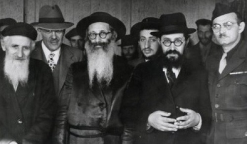

My Partner in Life
Heishke grew up in a Chassidishe family, but he still had a lot to learn about the Chassidishe customs that his wife brought from her parents’ house, which she made a part of their joint home.
 IT ALL BEGAN
WITH A CHAVRUSA
IT ALL BEGAN
WITH A CHAVRUSA
It would require more than one volume to write about my life with my partner in life. However, it is not important and is absolutely unnecessary. Yet, I would like to mention certain interesting moments in our life together and in the period before our lives were joined, which are, perhaps, important for our future generations to know.
During the last year and a half that I was in Yeshivas Tomchei T’mimim in Brunoy, I learned with some bachurim who were behind in their learning and needed help. It would not be embarrassing to write about one such bachur. Today he is a well-known rav in a shul in Crown Heights, R’ Mordechai (Mottel) Gurary. He is the son of one of the famous women in Lubavitch, Ettia (then Levitin).
She was very short but very clever, sharp and “a Jewess with a passion.” She lived in the yeshiva in Brunoy. Her husband, R’ Zalman Levitin, was the mashgiach and mashpia in the yeshiva. Her son Mottele (now R’ Mordechai) was like an apple that did not fall far from the tree. He was smart, mischievous and he had a “tongue.”
His mother once came to me to ask a big favor. Her son was so sharp that he wasn’t impressed by anyone, so it was hard to find someone to learn with him. She was sure that he had a certain degree of respect for me. So she really wanted me to start learning with him.
I began learning with him. I don’t remember how much we learned and what I managed to accomplish, but she was right about one thing – I did not end up having any positive learning experience with him.

SHIDDUCH SUGGESTION
Ettia was very friendly with my mother. One fine day, she came with a smirk and said that she wanted to repay me and thank me with … a shidduch. Who did she have in mind? A girl by the name of Asya Menkin. Yes, none other than my devoted, faithful companion in life.
I knew the family and had even seen the girl before in the course of my wanderings. My mother knew her too. And my uncle Zalman Shimon (then rosh yeshiva in Brunoy and who was like a father to me) knew Asya’s father, R’ Sender, from Tomchei T’mimim in Lubavitch. In short, they agreed.
The problem was that I too had to agree and that went hard; not because she wasn’t good enough for me, on the contrary. How was I a match for such a frum, Chassidishe girl? But “thanks” to my weak character and strong pressure from relatives, I consented. I thought I had time and until a letter would be written to the Rebbe there was plenty of time for things to change.
We met, as is customary (how many times is an utter secret, i.e. I don’t remember). Apparently we liked one another, but when we began talking about writing to the Rebbe, my confused conscience rose to the fore, for if not now – then when? I had to inform Asya who I was and what I was about!
I started negotiating with my mother that before writing to the Rebbe, I wanted to write a letter to Asya and inform her what sort of “prize” was the person who planned on becoming her chassan.
My mother began to cry and I couldn’t bear that. I told her that if not to Asya, I would write to the Rebbe and ask him whether to conclude the shidduch despite the fact that I hadn’t told her the less than impressive truth about myself.
EISHES CHAYIL
Once again, my mother enlisted Uncle Zalman Shimon’s help. This time, he spoke uncharacteristically tough. If I believed that the Rebbe’s consent to the shidduch was holy and true, since he sees the truth, why shouldn’t I rely on his answer? “If you are not suitable, the Rebbe won’t agree to the shidduch.”
I was bested once again. I wrote a letter to the Rebbe and received his consent and blessing. Boruch Hashem, the shidduch took place and we married in Paris and Asya became my loyal devoted and true life partner; my dearest friend till this day. We hope to continue together until the coming of the righteous redeemer.
I don’t want to describe everything that happened before the wedding, the wedding itself, and after the wedding, as interesting as it may or may not be. I want to relate that when I married my life’s partner, I knew that she was frumer and more Chassidish than me, and in the course of our life together I may have dickered with her “a bit” regarding her extreme piety. On the other hand, her Chassidishkait and frumkait had a positive effect on her husband … generating a certain degree of balance.
With a huge jump I will skip to the time we arrived in Brooklyn in 5715/1955-1956. At first I worked very hard, day and night, hiring myself out for “peanuts.” Nu, this is not relevant to anyone and is not interesting to know except as it pertains to my wife who despite my paltry earnings ran the house in the most amazing way. From the few crumbs I brought home, she brought to the table many tasty dishes.
Again, this is not what is important. Asya brought a family “custom” that amazed even great Chassidim and “men of works.” Thanks to that, our house was packed with bachurim who sat at our table on Shabbasos and Yomim Tovim. There were those “mehadrim” who enjoyed our table on weekdays too. It reached the point that I was called to a din Torah, as will be related.
From where did my wife get this practice?
STORMY NIGHTS
Nearly all the years of her childhood and youth she lived in Kutaisi, Georgia, which hosted the main outpost of Yeshivas Tomchei T’mimim in the 1930’s, during the worst era of persecution of religious Jews in general and Chassidim in particular (the truth is that in Georgia the persecution was less than in other locations in Russia. Why? Who knows?)
The home of Asya’s parents, Sender and Ada Menkin, served as a sort of hostel for the yeshiva bachurim of Kutaisi. Their home wasn’t large, but the bachurim often slept there wherever they could find a place (sometimes it was under the table). They did not earn much but there was always something for the bachurim to eat.
There were times that Asya and her sister Zlata, who were little girls, would stand for many hours on line in order to obtain bread for the bachurim. Their brother, Leibe Henech (who passed away as a bachur in the yeshiva in Samarkand), was outstanding in this trait. Here is just one little example. His parents bought him a warm, short coat for cold days which he never wore. He always found a yeshiva bachur who needed it more. In short, Asya brought a great load of customs like these.
Many were the stormy nights in our home. The bachurim of those days (who are grandfathers today) made a much bigger commotion than they do nowadays. Our landlady, Rebbetzin Viller, lived underneath us. She regularly complained that she could not sleep because of the commotion at our table until late at night. She pleaded with me and I asked the bachurim to have pity on a widow, but my importuning had very little effect on them.
For example, one of the bachurim who came to us – and then a second and a third – became a chassan in the middle of the night when he left the Rebbe’s yechidus room. The bachur took a bottle of mashke, came to our house with some friends, and obviously, the noise they made could be heard a bit further than the landlady’s bedroom.
Then one morning, I received orders to go to the beis din in Williamsburg for a din Torah. I was stunned – someone was calling me to a din Torah! Who? Why? I was a poor laborer who did no business with anyone (the hazmana did not say who was calling me to the din Torah). Well, if I was called, I had to go.
LEGAL FORM
When I went to the beis din for the din Torah and paid for the din Torah, I found out that the av beis din, the Dayan, was the Rav of Sharmash, R’ Naftali Hirtzke Koenig. I knew him from the DP camp in Poking where he had been rav of the Aguda Tachas (under) * and my grandfather, R’ Mendel Dubrawski, had been the chief rabbi. In the beis din room they sat in adjoining rooms. I heard that my grandfather once helped the Rav of Sharmash arrange a divorce. He was considered a big talmid chacham in Hungarian parts.
I asked the Dayan who had called me to a din Torah and he said, Rebbetzin Viller. He then immediately asked me whether I was related to Rabbi Mendele Dubrawski. I said he was my grandfather, to which he emotionally replied, “Ai ai, where do you find Jews like that today?”
The Rav of Sharmash gently told me that this wasn’t exactly a din Torah, but compassion for a widow. “I will placate her and gave her a note (not an actual p’sak din) that if you don’t stop the noise at night, you will try to find another apartment.”
I said we were looking for another apartment in any case and the Dayan parted very warmly with me.
We soon found another apartment opposite 770 but not much changed. From the even smaller kitchen, my wife brought out even bigger meals to the table for the guests, relatives and yeshiva bachurim. Over here, we had even bigger problems because of the noise. There were bigger accusations and threats, this time from a gentile who lived opposite us. He once got down on his knees like a madman and swore he would shoot me (this is not the place to tell how we had to call the police and so on).
In short, my life’s partner continued to run things as she did previously.
Sadly, my wife in later years could not continue this way of life due to serious health problems and we hope that Hashem will speedily heal her. My writing about her is explicitly not for her, because she adamantly opposes it. I have made an exception in order to provide an example for the grandchildren and great-grandchildren so they continue in this way.
*After the war, spiritual leadership formed in the DP camps. Those living in the Poking DP camp consisted mainly of religious Jews who were Lubavitchers and those from Russia (which is why the chief rabbi was Rabbi Dubrawski), while in the Landsberg camp there were Jews from other countries (Poland, Hungary, Romania, etc.) who were led by the Klausenberger Rebbe zt”l. Under the leadership of the rabbinic board (Vaad HaRabbanim) in Landsberg were various religious institutions that formed in the various camps including branches of Agudath Israel which were called, “Agudath Israel Tachas (under) HaRabbanim in Landsberg.”
"My Partner in Life." Beis Moshiach, no. 839 (June 29, 2012).